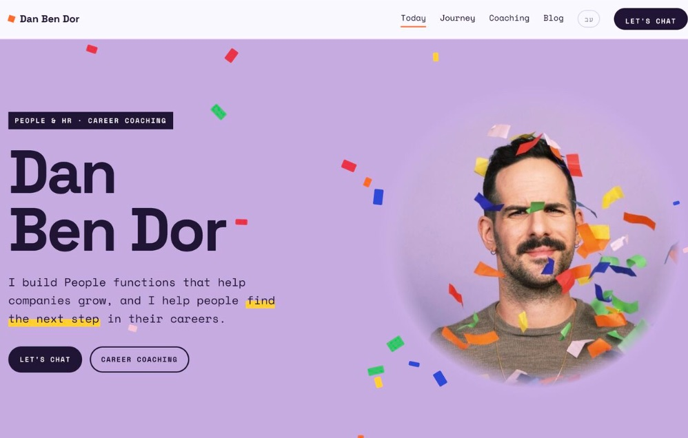

מיתוג אישי הוא חלק מהדרך. ולפעמים, צריך גם קצת אומץ כדי לצאת איתו החוצה.

יש רגעים שבהם אתה חושש לעוף על עצמך קצת יותר מדי, או להיתפס כיהיר. ויש רגעים שבהם אתה פשוט אומר: פ*ק איט, הגיע הזמן לקפוץ למים.
אז הנה, אני ממש שמח להשיק את האתר המקצועי החדש שלי!
אולי זה נשמע קצת מיושן היום, בעולם שבו כבר אפשר לעשות כמעט הכול עם AI, אבל היי! אני וקלוד בנינו אותו יחד. 😉
האתר הוא חלק ממסע רחב יותר של מיתוג אישי ויציאה לעצמאות, ולצדו עוד כמה פרויקטים מרגשים בדרך.
תמצאו בו הישגים מקצועיים, תובנות מהדרך, ובעיקר שירותים ותהליכים שבניתי כדי לעזור לאנשים לדייק את הצעד הבא שלהם בקריירה. בין אם מדובר בצומת מקצועית, בחיפוש כיוון חדש או ברצון לעשות את הדברים קצת אחרת.
אני מביא איתי ניסיון, פרספקטיבה והרבה רצון לעזור לאנשים ולמנהלים להתפתח, לקבל החלטות ולמצוא את הדרך הנכונה עבורם.
אז תרגישו חופשי להיכנס, להתרשם, לפרגן, לתת פידבק, לשתף ולהגיב. אני באמת אשמח לשמוע מה אתם חושבים.
ולמי שאוהב טיזרים: שבוע הבא קורה כאן עוד משהו ממש מרגש. STAY TUNED 👀